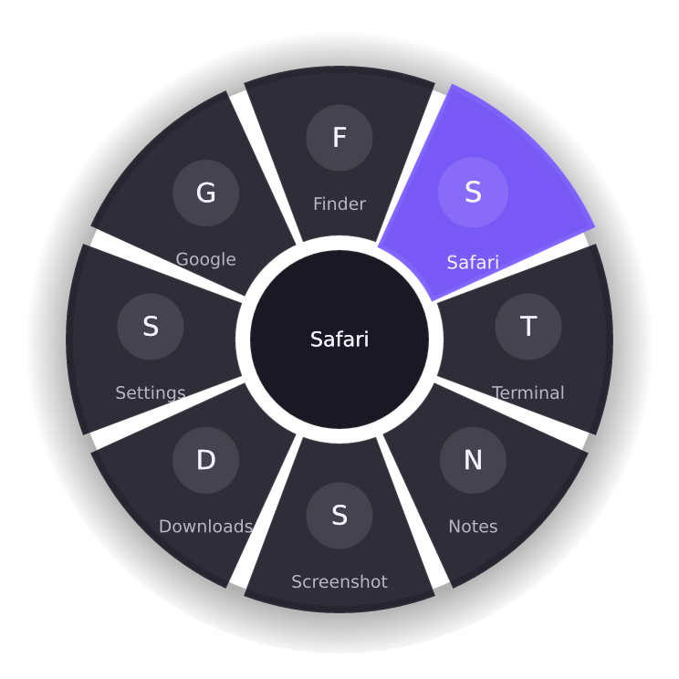

Hold right-click. Pick. Release.
TheOrbit opens a ring of apps and actions around your cursor. Move onto an item, let go, and it runs.
Free and open source. Runs on macOS, Windows and Linux (X11).

Release on an item to see what TheOrbit would run.
Press Enter to open the ring. Use the arrow keys to move between items, Enter to choose one, and Escape to cancel.
Three moves, no menus to hunt through
-
Hold the right button
After about a third of a second, the ring opens around your pointer.
-
Move onto an item
The highlight follows your direction, so you don't have to aim precisely.
-
Release
The item runs. Let go in the centre to cancel instead.
It stays out of your way
- You right-click and release quicklyThe normal context menu opens.
- You right-drag before the ring opensThe drag passes through, so games and design tools keep working.
- You switch TheOrbit off from the trayEvery mouse event passes straight through.
Make it yours
Fill the ring with the things you reach for every day. Edit it in the settings window, or in one JSON file that TheOrbit reloads when you save.
appLaunch an application.urlOpen a website.fileOpen a file or folder.shortcutPress a key combination such asctrl+alt+t.shellRun a command in the background.
config.json
{
"holdMs": 350,
"radius": 150,
"sound": true,
"items": [
{ "title": "Notes", "type": "app", "value": "Notes" },
{ "title": "Capture", "type": "shortcut", "value": "cmd+shift+4" },
{ "title": "Docs", "type": "url", "value": "https://docs.rs" },
{ "title": "Downloads", "type": "file", "value": "~/Downloads" },
{ "title": "Build", "type": "shell", "value": "make -C ~/code" }
]
}Small enough to forget
TheOrbit is native Rust with no web view. It only does work while the right button is held, so it sits in your menu bar or tray without getting in the way.
The motion is calm: the ring springs open, the highlight glides between items, and an optional soft tick confirms your choice. If you turn on Reduce motion in your system, TheOrbit follows it.
Runs where you work
- macOSmacOS 11 or later, on Apple silicon and Intel. A menu-bar app with no Dock icon. It needs Accessibility access to see the right button. macOS setup
- WindowsNo permissions needed. Run
theorbit.exeand look for the tray icon. Windows setup - LinuxNeeds an X11 session and a compositor. Wayland blocks global mouse grabs, so it isn't supported there. Linux setup
Android and iOS are on the roadmap.
Get TheOrbit
Download the build for your system, unzip it, and run it. Keep theorbit and theorbit-settings in the same folder.
Or build it yourself with Rust
$ git clone https://github.com/geniussingare/theOrbit.git
$ cd theOrbit
$ cargo build --release -p orbit-app -p orbit-settings
$ ./target/release/theorbitQuestions
Does it replace my right-click menu?
No. A quick right-click opens the normal context menu. The ring only opens when you hold the button. The context menu appears when you release, not when you press.
Will it get in the way of games or design tools?
No. If you move the pointer before the hold delay ends, TheOrbit hands the drag to the app untouched. You can also change the hold delay, or switch TheOrbit off from the tray.
Why does it need Accessibility access on macOS?
macOS only lets an app watch the mouse outside its own windows if you allow it. TheOrbit needs that to notice the right button wherever you are.
Why is Linux limited to X11?
Wayland blocks global mouse grabs, and TheOrbit relies on one to see the right button across every window.
Is shell access safe?
Shell items run with your own permissions, exactly like a script you wrote. TheOrbit only runs what is in your config file, so treat that file like any other script.
Does it collect data?
No. TheOrbit has no account, no analytics and no network code of its own. Your settings stay in a JSON file on your computer.
Is it free?
Yes. TheOrbit is open source under the Apache License 2.0.
More answers in the full FAQ.